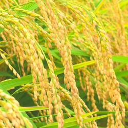

🌱 AI虚拟农场 - 机器学习的核心学习范式
任务2：稻麦品种分类
第一步：收集稻麦图片
🔍 在稻麦图片库（1-10号照片）中，没有品种名称，没有标注。
请先观察图片库中稻麦的差异，尝试自主分类，在学习任务单上记录你的分类：组1：___号稻麦（分类依据：____）；组2：___号稻麦（分类依据：____）；组3：___号稻麦（分类依据：____）。
第二步：训练模型，发现特征
训练
第三步：测试验证模型，稻麦品种分类
测试
